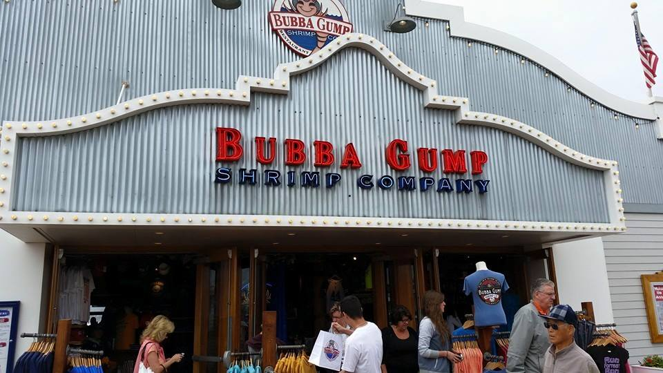

La Californie, État de l'Ouest américain,
s'étend de la frontière mexicaine le long du Pacifique sur près de 1 450 km.
Son territoire très contrasté comprend des plages entourées de falaises,
une forêt de séquoias géants, les montagnes de la Sierra Nevada,
les terres agricoles de la vallée centrale et le désert des Mojaves.
Los Angeles abrite Hollywood, la capitale de l'industrie du divertissement.
La ville de San Francisco est connue pour ses rues en pente, le Golden Gate, l'île d'Alcatraz et son tramway.
Les lieux important à visiter
La forêt de sequoias géants, les plus vieux arbres de notre planète
Santa Monica, une plage avec des attractions et des restaurants sur un quai, avec des centaines de magasins le long de la plage accompagné d'une piste cyclable et de structures pour faire du sport au soleil
Le restaurant à l'éffigie du film "Forest Gump", sur la baie de Santa Monica, spécialités fruits de mer
Le parc d'Universal Studios à Los Angeles, me voici avec mon pote Homer après la visite de Springfield

Le golden gate bridge, d'une longueur totale de 2737 mètres !
En route vers le Nevada, sur le chemin de Las Vegas, vous passerez surrement par la vallée de la mort, où la température pendant la journée peuvent aller au dela des 40° !
Profitez bien de votre voyage ! Je vous attend pour la suite à Las Vegas !